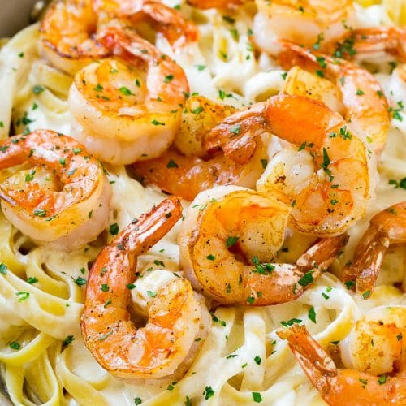

BAKED SALMON

DESCRIPTION
A full meal you can cook in a single pot and a strainer
Ingredients
- pasta(or tortellini)
- shrimp (peeled and deveined)
- broccolli
- alfredo sauce
- pepper
Steps
- Boil a large pot of water
- Add in your pasta or tortellini
- Set a timer for six minutes
- Cut the brocolli while it boils
- When the timer is at 4 minutes left, add the shrimp and brocolli
- Once it's finished boiling, drain the water in your sink
- Add in a health amount of alfredo sauce
- Sprinkle on some pepper